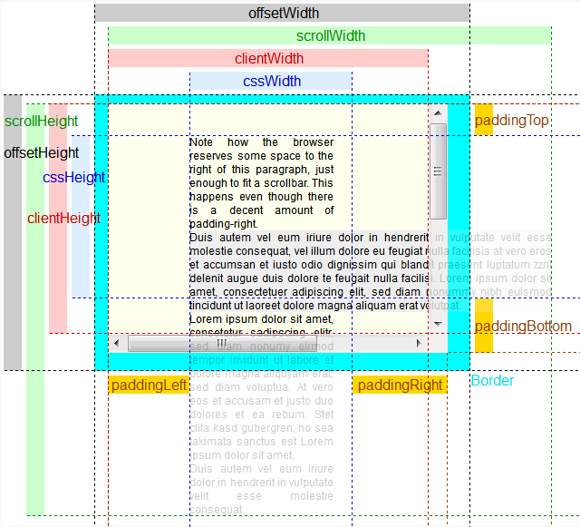
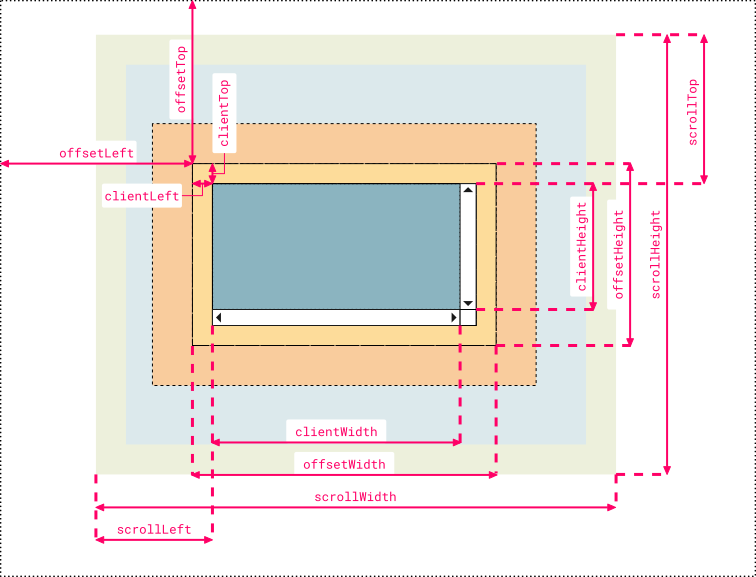

Understanding offsetWidth, clientWidth, scrollWidth and -Height, respectively
There are several questions on StackOverflow regarding offsetWidth /
clientWidth / scrollWidth (and -Height, respectively), but none give
comprehensive explanation of what those values are.
Also, there are several sources on the web giving confusing or incorrect information.
Can you give a complete explanation including some visual hints? Also, how can those values be used to calculate scroll bar widths?
Answer
The CSS box model is rather complicated, particularly when it comes to scrolling content. While the browser uses the values from your CSS to draw boxes, determining all the dimensions using JS is not straight-forward if you only have the CSS.
That's why each element has six DOM properties for your convenience:
offsetWidth, offsetHeight, clientWidth, clientHeight, scrollWidth
and scrollHeight. These are read-only attributes representing the current
visual layout, and all of them are integers (thus possibly subject to
rounding errors).
Let's go through them in detail:
-
offsetWidth,offsetHeight: The size of the visual box incuding all borders. Can be calculated by addingwidth/heightand paddings and borders, if the element hasdisplay: block -
clientWidth,clientHeight: The visual portion of the box content, not including borders or scroll bars , but includes padding . Can not be calculated directly from CSS, depends on the system's scroll bar size. -
scrollWidth,scrollHeight: The size of all of the box's content, including the parts that are currently hidden outside the scrolling area. Can not be calculated directly from CSS, depends on the content.

Try it out: jsFiddle
Since offsetWidth takes the scroll bar width into account, we can use it to
calculate the scroll bar width via the formula
scrollbarWidth = offsetWidth - clientWidth - getComputedStyle().borderLeftWidth - getComputedStyle().borderRightWidth
Unfortunately, we may get rounding errors, since offsetWidth and
clientWidth are always integers, while the actual sizes may be fractional
with zoom levels other than 1.
Note that this
scrollbarWidth = getComputedStyle().width + getComputedStyle().paddingLeft + getComputedStyle().paddingRight - clientWidth
does not work reliably in Chrome, since Chrome returns width with
scrollbar already substracted. (Also, Chrome renders paddingBottom to the
bottom of the scroll content, while other browsers don't)
Suggest
I created a more comprehensive and cleaner version that some people might find useful for remembering which name corresponds to which value. I used Chrome Dev Tool's color code and labels are organized symmetrically to pick up analogies faster:

-
Note 1:
clientLeftalso includes the width of the vertical scroll bar if the direction of the text is set to right-to-left (since the bar is displayed to the left in that case) -
Note 2: the outermost line represents the closest positioned parent (an element whose
positionproperty is set to a value different thanstaticorinitial). Thus, if the direct container isn’t a positioned element, then the line doesn’t represent the first container in the hierarchy but another element higher in the hierarchy. If no positioned parent is found, the browser will take thehtmlorbodyelement as reference
Hope somebody finds it useful, just my 2 cents ;)